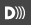

Media player accessibility
Overview – Media player accessibility
The media player itself should be keyboard accessible and screen reader compatible. The browser default HTML5 video media player is insufficient, as browsers and screen readers vary in their support of accessibility features. The solution is to adopt a media player that has been designed and tested for accessibility.
Accessible media players include the Able Player, OzPlayer, Nomensa media player, PayPal media player, and the YouTube media player.
Keyboard accessibility
- All controls can receive focus via the tab key:
- If using a native HTML button, it receives focus automatically.
- If using a custom button (with a
<div>or a<span>element), it needs thetabindex="0"attribute.
- Controls have a visible keyboard focus indicator.
- The tab order of controls matches the visual order, left to right.
- Controls are operable by keyboard:
- Play/Pause controls activate via the Enter key or Spacebar.
- Volume control activates via the arrow keys, usually up and down.
- Forward and Rewind controls activate via the arrow keys, usually left and right.
- Other controls like Captions and Full Screen activate via the Enter key or Spacebar.
- Text, controls, and backgrounds have sufficient contrast between colors.
Screen reader accessibility
Each control presents to screen readers its name and role, and value if one or more is set.
- Name: the control’s label, e.g., “Play”, “Pause” and “Volume”. The name is either the child node of the button (
<button>Play</button>) or is set via thearia-labeloraria-labelledbyattribute. - Role: the control's functional purpose, e.g., “Button”, “Slider”. A native
<button>element declares its role automatically as “button”. Custom controls will use therole="button"attribute, for the most part. The exception is the volume control, which uses therole="slider"attribute. - Value: the attributes or current state of an element, e.g, “50%” for volume. The volume slider has a percentage value that, when changed, is declared by screen readers. Refer to Module 12 > Sliders for details on how to accomplish this.
Support for captions, audio descriptions and transcripts
The ideal media player provides built-in support for captions, audio descriptions, and transcripts.
Some media players add all accessibility features to a menu accessed via the closed caption button. Preferably, the player provides a separate button for each feature, with the standardized icon:
- Closed caption icon
- Transcript icon
- Audio description icon
- Sign language icon
There are workarounds if the media player does not support easy integration of the accessibility features:
- Provide open captions, burned into the video, rather than closed captions (the user cannot customize their appearance).
- Provide the transcript directly or via a link, adjacent to the video.
- Provide the audio description in a separate (longer) video easily accessible to the user.